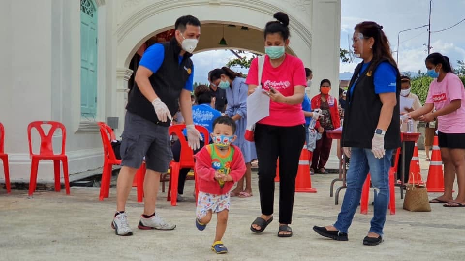
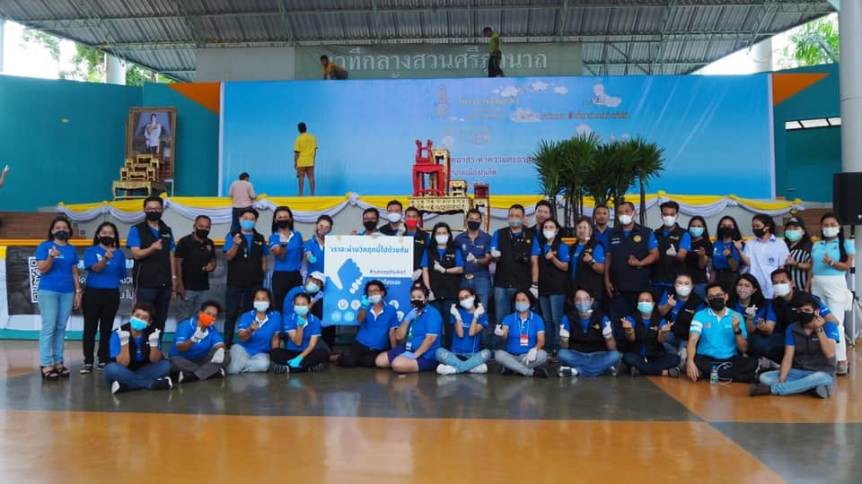
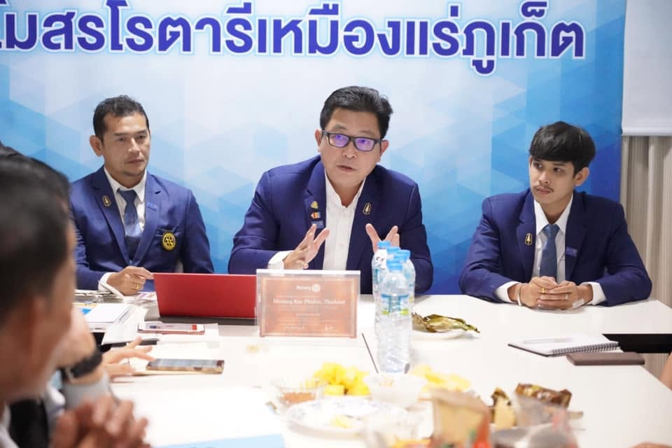
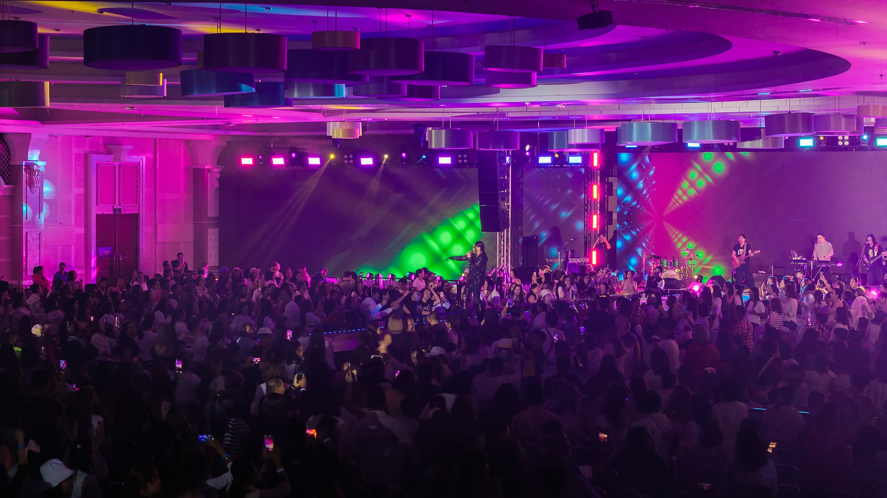

เหมืองแร่ภูเก็ตขุดขึ้นมาทีละกระเชอ — สโมสรของเราก็เช่นกัน แปดปีบริหาร แปดกระเชอ ที่ตักโอกาส สุขภาพ และอนาคต ขึ้นมาให้เกาะที่เรารัก
เรื่องเล่า 5 บท จากบันทึกจริงบนเพจสโมสรและทะเบียนข่าวภาค 3330
สโมสรรับสารตราตั้งเดือนมีนาคม 2562 — หนึ่งปีต่อมาโควิดถล่มภูเก็ต สโมสรน้องใหม่เลือกตอบด้วยการลงพื้นที่ ไม่ใช่การรอ
ก่อตั้งโดยการอุปถัมภ์ของสโมสรโรตารีภูเก็ตเซ้าท์ · นายกก่อตั้ง เกรียงยุทธ เตโชภาส
อัลบั้มบนเพจเริ่มที่กลางปี 2563 — สมาชิกรุ่นก่อตั้งท่านใดมีภาพวัน Charter ส่งมาเติมกระเชอใบแรกของสายได้ที่ฝ่ายภาพลักษณ์ รอรูปจากสมาชิก
แจกนมและของจำเป็นแก่ครอบครัวที่กระทบจากโควิด ณ สวนสาธารณะกะทู้ — กิจกรรมชุมชนยุคเริ่มต้นที่กำหนดตัวตน "ลงมือทำ"


การประชุมครั้งแรกของปี 2563–2564 ภายใต้นายกธนประเสริฐ — สโมสรตั้งหลักเป็นระบบ

บรรจุฟ้าทะลายโจรส่งมอบ รพ.สต.กะทู้ + โครงการ "โฮมีโอพาธีย์ สู้วิกฤติโควิด-19"
กลางปีที่เมืองยังเงียบจากโควิด สโมสรค้นพบเครื่องมือของตัวเอง — เสียงดนตรี
คอนเสิร์ตการกุศลครั้งแรกของสโมสร จัดกลางวิกฤติเพื่อระดมทุนช่วยชุมชน — จุดเริ่มของประเพณีที่กลายเป็นลายเซ็นของเหมืองแร่ภูเก็ต ยอดระดมทุน — รอข้อมูลเหรัญญิก
จากงานระดมทุนครั้งเดียว สู่สายงานที่ออกแบบมาเพื่อเปลี่ยนชีวิต — ทั้งบนเวทีและหลังเวที
งานสถาปนาปีบริหาร 2565–66 (นายกศาสวัส) + ร่วม Club Vibrant Workshop ของภาค
พาเด็กพิเศษเข้าค่ายกิจกรรมทะเลและปล่อยเต่า ณ ฐานทัพเรือทับละมุ
เปิดโอกาสด้านดนตรีแก่เด็กภูเก็ตกว่า 2,000 คน verify ตัวเลขกับรายงานโครงการ — พร้อมโครงการ "สร้างฝัน สร้างอาชีพ" ร่วมกับเรือนจำจังหวัดภูเก็ต
The Legends Concert ที่ประกาศเป้าหมายชัด: ระดมทุนจัดหาเครื่องเอกซเรย์ให้โรงพยาบาลถลาง ยอดระดมทุน — รอข้อมูลเหรัญญิก
ปีที่พลังบนเวทีกลายเป็นสิ่งที่จับต้องได้ในโรงพยาบาล ในทะเล และในเครือข่ายข้ามประเทศ
ผลลัพธ์จากสายงานคอนเสิร์ต + Global Grant ร่วมกับสโมสรคู่มิตรเกาหลี — หลักฐานที่ดีที่สุดของประโยค "จากเวที สู่ชีวิต": เสียงเพลงเมื่อวาน คือเครื่องมือแพทย์วันนี้
เครือข่ายระหว่างประเทศที่อยู่เบื้องหลัง Global Grant
โครงการฟื้นฟูระบบนิเวศทะเลร่วมภาค 3330/3600 รอยืนยันสัดส่วนสโมสร
ชนะเลิศประกวดสนเทศ Intercity Meeting · เกียรติบัตร "ผู้มีคุณูปการต่อการศึกษาจังหวัดภูเก็ต" · โครงการถนนปลอดภัย 6 โรงเรียน · World Polio Day ร่วม 11 สโมสร · Sound of Hope ปี 2 · ครบรอบ 6 ปี ณ บ้านตะวันฉาย
รุ่นปัจจุบันรับไม้ต่อ ด้วยโจทย์ที่ชัดกว่าเดิม: ไม่ใช่แค่จัดงานให้ใหญ่ แต่ทำให้ผลกระทบคงอยู่
แอม เสาวลักษณ์ · ใหม่ เจริญปุระ · The Palace — บันทึกไว้ 709 ภาพ ยอดระดมทุน — รอข้อมูลเหรัญญิก

มอบบัตร T-CONIC LIVE IN PHUKET แก่เยาวชนทั่วภูเก็ต — เปิดประตูสู่ดนตรีและโปรดักชันระดับสากล
คณะกรรมการปี 2569–70 ภายใต้แนวคิด Create Lasting Impact — สายกระเชอหมุนต่อ และหน้าเว็บนี้คือบันทึกของมัน
ทุกโครงการที่สโมสรลงมือทำ ถูกบันทึกไว้เป็นหลักฐาน — นี่คือยอดรวมที่ระบบทะเบียนโครงการสรุปให้
ยอดผู้รับประโยชน์รวม · ชั่วโมงอาสา — รอทีมเติมข้อมูลใน P1 · ตัวเลขอัปเดตอัตโนมัติเมื่อระบบขึ้นบัญชีสโมสร
สโมสรเล็กๆ 36 คนทำมาได้ขนาดนี้ ลองนึกภาพถ้ามีคุณอีกคน
ร่วมกับเรา → ดูผลงานของเรา